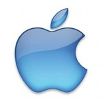
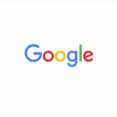

Business Models Compared
More than any other American companies, Apple, Inc., Microsoft Corporation and Google, Inc. dominate the intersection of technology
and consumer access. Even though they compete across a huge range of subindustries, such as computing software, hardware,
operating systems, mobile devices, advertising, applications and Web browsing, each firm takes a different approach from
an organizational and philosophical perspective.
On one level, it is very easy to see which model is the most successful,
at least superficially.
As of 2015, Apple had a market cap of around $640 billion and was the largest company in the world.
By comparison, the second-largest company, Google, had a market cap of approximately $450 billion. Microsoft came in third with
a market cap of $376 billion.
Market cap is only one measure of business success, and it is not necessarily a great
predictor of business model sustainability. All three companies rely on unique product offerings to generate the bulk of their revenues,
and each has tried to break into the others' markets with alternative services and varying degrees of success.
In 2015, all three companies offer a phone, tablet, TV-based operating system and a desktop operating system.
Each firm is rapidly jockeying for position in cloud-based technology. Google still performs best with business and
information revenue since AdSense sells far better than Apple's iAd or Microsoft's Bing Ads.
Until 2015, Apple relied on product innovation and customer loyalty; Google thrived on low-cost services and its unique Internet status;
and Microsoft's empire was built on servicing businesses and licensing software.
|  |

|
 |
The Apple Model: Dominance and RiskIt is difficult to recall a modern American business so thoroughly dominated by the ideas and personality of one individual as Apple and Steve Jobs. Jobs' remarkable innovations propelled Apple to unprecedented heights until his sudden passing. During Steve Jobs' second reign, Apple returned to relevancy and revolutionized multiple subindustries. It took over the Walkman industry from Sony and completely redefined mobile phones when the iPhone was released. Apple also practically invented the tablet industry. Jobs was also ruthless about using patents, litigation, intimidation and other hardball tactics to limit competition, and his successors are no different. This has led to more than one protracted legal battle, including some high-profile clashes with Samsung, but it has been a boon to Apple's near hegemony. Apple easily bests its competitors in terms of hardware sales and high-end gadgets. Thanks to the company's early 2000s reputation as a nonconformist response to Microsoft, millennials grew up using Macs in large numbers. More than Google or Microsoft, Apple can rely on a loyal consumer base. This is buoyed by the company's brilliant insistence on integrating its products, making it easier to keep using new Apple products and simultaneously more difficult to switch to a competitor's interface; this is sometimes referred to as the "Apple Ecosystem Lock." The weakness in the Apple model lies in the historic success of the company's golden invention: the iPhone. Nearly three-quarters of all Apple revenue comes from iPhone sales, and no new innovation has taken off since its former CEO died. This is not dangerous as long as iPhones remain popular, but just ask Blackberry about the sustainability of single-product sales. |
The Microsoft Model: A New ApproachFor years, Microsoft dominated the computer industry with its Windows software; Apple was an afterthought for more than a generation of operating products. Before Google Web browsing began to dominate the market, Microsoft gave away Internet Explorer for free and drove Netscape out of business. The Microsoft revenue model historically relied on just a few key strengths. The first, and most important, is the licensing fees charged for use of the Windows operating system and the Microsoft Office suite. After a few years of increasing irrelevance in the race against Google and Apple, Microsoft unveiled a new vision in April 2014, instantly shifting focus to make Windows software more compatible with competitor products, such as the iPad. Microsoft also has a few successful products, highlighted by the Microsoft Surface and Surface Pro, that battle Apple devices. Moving forward, however, Microsoft realizes it cannot simply stick with the same old method and continue to compete with Apple and Google. Paid software is a more difficult sell in an age of low-cost alternatives. Additionally, tablets and phones are replacing PCs. A newer Microsoft business model has been telegraphed by CEO Satya Nadella, one that emphasizes product integration and a "freemium" software package. For example, Microsoft wants customers to be more engaged and fixated on its products. In 2015, CMO Chris Capossela explained this concept with a simple example: "Rather than using Skype on Sunday night to phone home, you are using Skype for messaging 15, 20, 30 times every single day. That's engagement." |
The Google Model: Give It Away for FreeUnsurprisingly, the heart and soul of the Google revenue stream is its search engine and Web advertisements. While Google is not the only company to give away free services and bundle them with other goods, few do it as well or as successfully. Google services do not cost the user anything. Instead, Google lures in users and collects their data, and then sells access to eager buyers across the planet. Every marketing firm in the world wants the kind of information and repeat usage Google enjoys. Moreover, the company keeps getting better and more sophisticated at targeting consumers and businesses, syncing preferences and playing economic matchmaker. This no-fee model is not just profitable, it is very disruptive to Apple and especially to Microsoft. While Apple and Microsoft keep competing to find better and more innovative products to charge consumers, Google is all too happy to find a way to monetize activities for which users are eager to stop paying. Google does not charge for Android, which is one of the chief reasons manufacturers are so drawn to it. The Google Web apps, which bear a striking resemblance to Office programs, are also free. Since Google began offering a free operating system and computer software, sales for Microsoft Windows and Office have slowed and, in the long term, threaten to die out. |
|---|